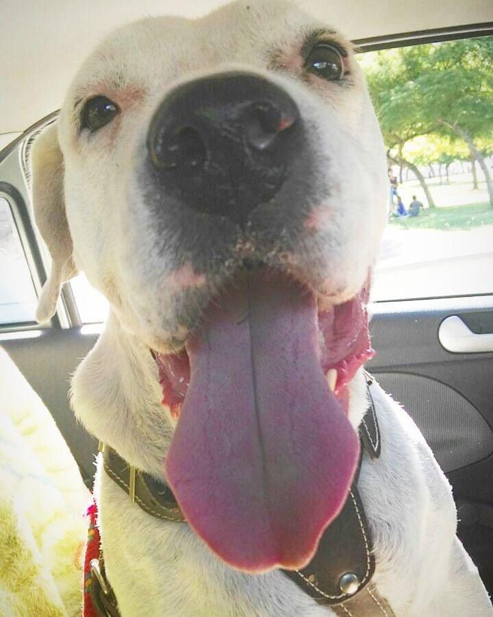
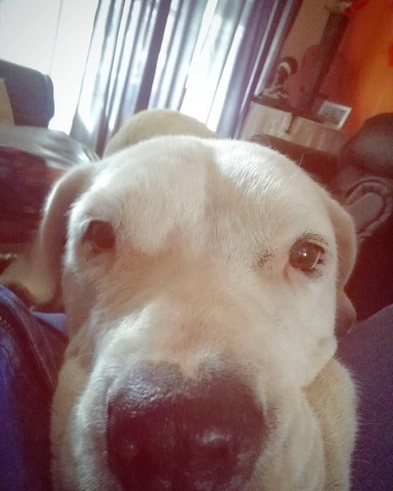
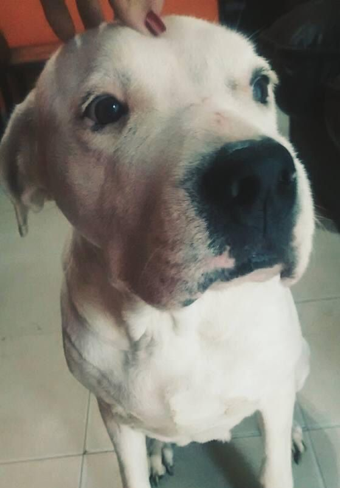

Hoy les vengo a contar quién es la verdadera Olivia.. Es ella, nuestra familia... No está entre nosotros actualmente pero tenemos tanto amor y la recordamos con tanto cariño que casi sentimos que sí. Llegó a nosotros con Anibal, el marido de mamá.. Mudándose de varios lugares, siempre acostumbrándose a los cambios y nuevos perros amigos.. Tuvo cachorritos (6 para ser especifica, de los cuales sobrevivieron 3). Fue un trabajo de parto muy duro con ayuda de un veterinario y nosotros con ella acompañándola.. Soportó eso.. Soportó estar días y días sin sus cachorros.. Se recuperaron y cada uno tuvo su camino.. (Hoy tengo en casa a un nieto de Olivia, se llama Tango). Toleró casi una torsión gástrica, sufría de otitis.. Se mejoró. Al tiempo conocimos una veterinaria que venía a domicilio, la cual hoy es la vete de cabecera de todos los que tenemos. Entre chequeo y chequeo, detectamos un tumor en el bazo, el cual la estaba perjudicando demasiado. Adicional a eso, no podía casi ni caminar por problemas en la cadera, ya estaba grande. Decidimos operarla de ese tumor, sabiendo los riesgos a los que se sometía, sabiendo lo que podía llegar a suceder. Nos arriesgamos! Anibal, mamá, la vete y yo llegamos al quirofano y luego tuvimos que esperar durante dos hs, fueron eternas! La cirugía salió bien, ella estaba bien.. La vimos despertar, la vimos bien. Quedaba en observación durante 48 hs. Volvimos a casa y a la hora se comunica el cirujano informándome lo que no queríamos que suceda nunca! Oli se fue, no tolero.. Su corazón no pudo más! Y en su momento fuimos egoístas, pero hoy entendemos que ella soportó muchísimo y nos regaló 16 años de ella... Por eso hoy vengo a contarles quién es! Porque se lo merece, porque fue una más de nosotros. El nombre de la página no tiene mucho que ver con los chocolates, pero toda nuestra vida tiene que ver con ella. ♥️